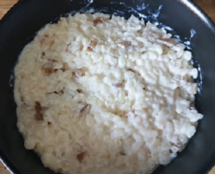

zurück
Milchreis
Zubereitungszeit: 30min
Ergibt: 1 große Portion
Schmeckt gut mit Früchten oder
Apfelkompott

100g Milchreis
400ml Milch
0.5 Pck Vanillezucker
Milchreis mit Milch und Vanillezucker 25-30 min auf mittlerer Hitze kochen
Dabei immer wieder umrühren